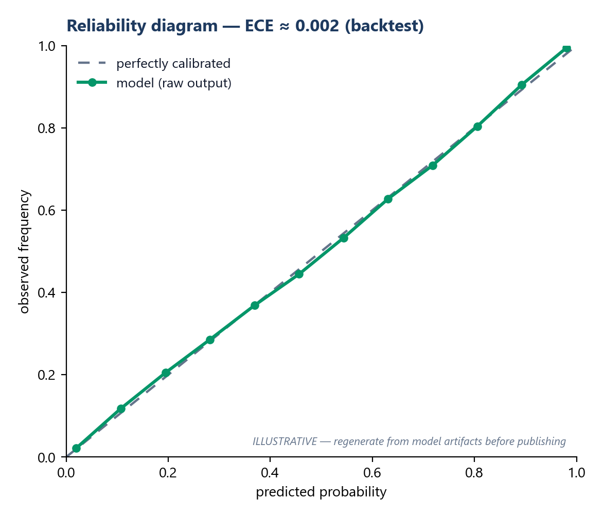
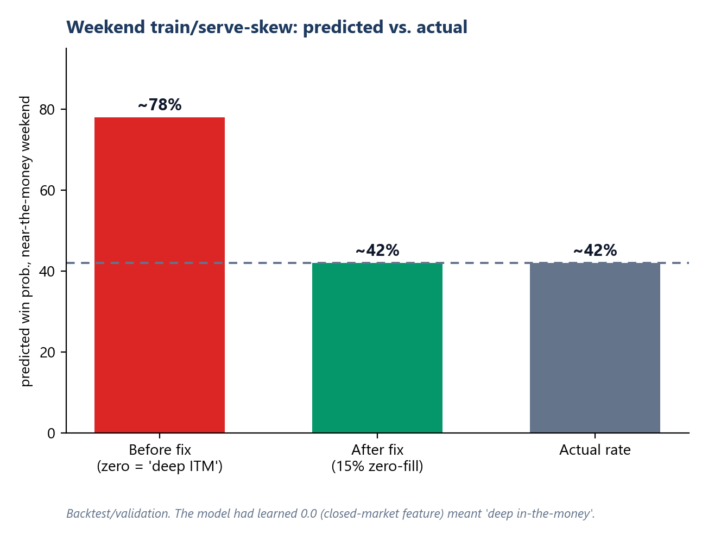
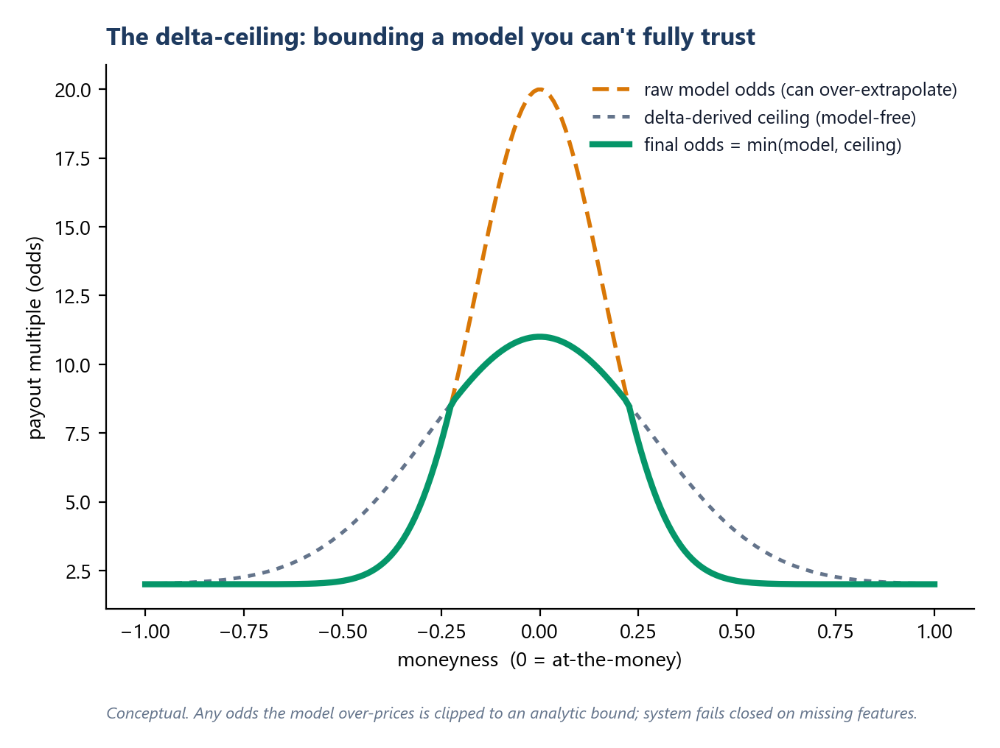

TL;DR
I built the pricing brain of ShareShark, a real-money stock-prediction platform, solo. It's a gradient-boosted model that estimates the probability a short-dated stock option finishes in-the-money, wrapped in calibration checks and a model-free safety layer so a confident-but-wrong prediction can never become an exploitable price. In backtest it beat a Black-Scholes baseline on every metric — and dominated the one that matters most for a pricing product, calibration: expected-calibration-error ~19× tighter (0.002 vs 0.040), worst-case calibration error ~18× tighter, plus ~18% lower log-loss and a better Brier score.
The problem
On a prediction platform, the price is the product, and the price is just a probability: odds = 1 / P(in-the-money). That means a model that's accurate on average but miscalibrated is worse than useless — if it says 80% when the truth is 42%, every user who notices prints money off you.
So the goal wasn't "high accuracy." It was trustworthy probabilities across the whole distribution, plus guardrails for the cases where any model eventually misbehaves.
The approach
Data & features. ~21.5M training rows across 342 stocks, with 167 engineered features: option Greeks, implied and realized volatility structure, moneyness buckets, ETF/macro context, a Black-Scholes baseline as a feature, and market-microstructure signals.
Model. Today it's a single, unified LightGBM model covering the full short-dated horizon — but it got there by iterating. For a long stretch it actually ran as multiple specialized models in production (one per market-timing window, plus separate end-of-day / end-of-week models); each version got better, and at some point I tested whether that specialization was still earning its keep. It wasn't — so I consolidated into one robust model that beat the specialized versions on accuracy and was far simpler to run. (Full story → model-consolidation case study.)
Tuning that can't cheat. I drove hyperparameters with a Bayesian search (scikit-optimize, 14-dimensional) — but a naive objective rewards degenerate models (a model that always predicts near the base rate can post a deceptively low log-loss). So I hardened the objective with 9 anti-degeneracy guards that reject overconfident, low-entropy, or wrong-direction models the optimizer would otherwise be happy to hand me.
Calibration is the product
I evaluated with expected-calibration-error (ECE) and reliability curves, not just AUC. Interesting result: the raw LightGBM output was already better-calibrated (ECE ≈ 0.0021 — about 19× tighter than Black-Scholes) than fitted Platt/Isotonic post-processors — so I shipped raw and kept the calibrators as monitored fallbacks. The discipline: measure calibration explicitly and let the data decide, rather than assuming you need a calibration layer.

The hardest bug: weekend train/serve skew
In testing I found the model pricing near-the-money weekend contracts at ~76–83% when the true rate was ~42%. Weekday accuracy was fine, so it wasn't model quality.
Root cause: 17 features depend on live bid/ask, which the data vendor returns as 0.0 when markets are closed. In training, 0.0 had only ever appeared as a real value (deep-in-the-money) — so the model learned 0.0 → near-certain. At serve time on weekends, 0.0 meant "missing." Same value, opposite meaning.
Fix: retrain with 15% zero-fill augmentation, teaching the model that 0.0 can also mean "no signal — lean on delta/Greeks/Black-Scholes." Ablation confirmed near-the-money weekend predictions fell from ~74% to a correct ~42%, with no loss of weekday accuracy. Shipped as a drop-in weight swap.

The safety net: a model-free "delta ceiling"
Even a 0.979-AUC model occasionally extrapolates badly in the deep-out-of-the-money tail — and any over-generous price is a direct loss. So model output is never trusted unconditionally: I bound it with an analytic ceiling derived from the option's delta (~1/|delta|), cap the model's odds at a fixed multiple of that bound, blend a symmetric floor to correct known near-the-money over-juicing, and log every override. The model adds value where it's confident; the math constrains it where it isn't; the system fails closed on missing features.

Bonus: pricing correlated multi-leg entries
Users could combine multiple predictions, which are not independent (two tech megacaps move together). Naive independence would systematically misprice them and hand out arbitrage. So multi-leg prices come from a t-Copula Monte Carlo simulation (Student-t for fat tails) over a correlation matrix stabilized with Ledoit-Wolf shrinkage, sector correlation floors, a volatility-regime uplift, and a nearest-positive-definite repair — priced conservatively on the 97.5%-CI upper bound of joint probability.
Validation methodology
Every figure here is out-of-sample. The model was evaluated on a temporal split — train on earlier periods, validate on later, held-out periods — to prevent look-ahead leakage. I report calibration (ECE/MCE), proper scores (log-loss, Brier), and ranking (AUC) on the held-out period, and confirmed the weekend-skew fix by ablation (toggling the zero-fill augmentation), not just by watching an aggregate number move.
Results (out-of-sample backtest)
| Metric | QuantShark (LightGBM) | Black-Scholes | Margin |
|---|---|---|---|
| ROC AUC ↑ | 0.979 | 0.973 | edges an already-strong baseline |
| Log-loss ↓ | 0.171 | 0.207 | ~18% lower |
| Brier score ↓ | 0.053 | 0.060 | ~12% lower |
| Expected calibration error (ECE) ↓ | 0.0021 | 0.0403 | ~19× tighter |
| Max calibration error (MCE) ↓ | 0.0079 | 0.1392 | ~18× tighter |
↑ higher is better, ↓ lower is better. Out-of-sample backtest of the production model; these are validation figures, not realized profit.
Ranking (AUC) was already near the ceiling for both, so the real story is calibration: the model's stated probabilities track reality far more tightly than Black-Scholes — which is exactly what keeps a pricing product from being picked off.
What this demonstrates
- Quant + ML judgment: calibration-first evaluation, regime-segmented models, derivative-pricing literacy (Greeks, copulas, shrinkage).
- Production ML engineering: train/serve parity, fail-closed inference, diagnosing skew, shipping safe weight swaps.
- Risk thinking: treating a model as something to bound, not blindly trust.
Tech stack
Python · LightGBM · scikit-optimize · SciPy / NumPy (t-copula, Ledoit-Wolf, nearest-PD) · pandas · Django/Celery for serving.
Honest notes
Metrics are backtest/validation on historical data; ShareShark operated pre-launch / low-traffic, so these are model-quality results, not live trading P&L. The heavy numerical lifting uses standard libraries (LightGBM, SciPy) — the contribution is the feature engineering, the anti-degeneracy guards, the skew diagnosis, the calibration discipline, and the safety layers.